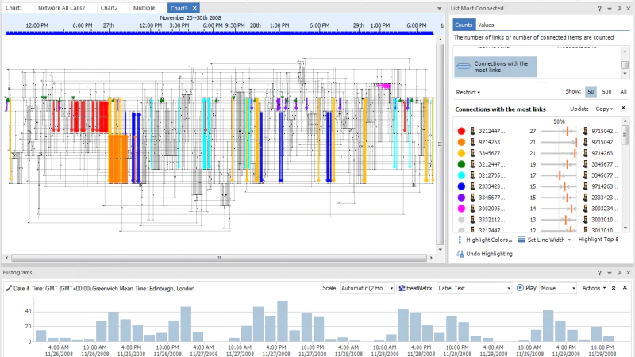

제품개요
IBM Security i2 Analyst's Notebook은 데이터를 인텔리전스로 전환하는 데 도움이 되는 비주얼 분석 툴입니다.
이 솔루션은 연결된 네트워크 시각화, 소셜 네트워크 분석 및 지리적 또는 시간적 보기 등의 혁신적인 기능을 제공하여
데이터에 숨겨진 연결성과 패턴을 발견합니다.
이러한 인사이트를 통해 범죄, 사이버 및 사기 위협을 더욱 효과적으로 식별하고 방지할 수 있습니다.
제품활용
- 수집
- OSINT 및 다크 웹 데이터를 포함한 내부 및 외부 소스에서 정형 데이터와 비정형 데이터를 수집하여 조회를 위한 광범위한 데이터 풀을 제공할 수 있습니다.
- 연합
- 고급 분석을 정교한 공간적, 시각적, 시간적 및 사회적 분석 기능과 연합하여 분석가에게 보다 높은 상황 인식을 제공할 수 있습니다.
- 분석
- 엄청난 양의 이질적인 데이터를 거의 실시간으로 유용한 정보로 변환하므로 자신있게 의사결정을 내리고 확고한 조치를 취할 수 있습니다.
- 링크 분석 환경
- 사람과 조직 등의 엔티티 간의 관계를 확인하고 이들이 서로 연결된 방법을 예시할 수 있도록 연관 차트에서 데이터를 시각화합니다.
다양한 형식화 옵션으로 사용자는 손쉽고 빠르게 정보를 표현할 수 있습니다.
- 타임라인 분석
- 타임라인에 정보를 표시함으로써 엔티티가 상호 연결되는 방법 이상을 살펴봅니다.
이러한 시간 뷰를 사용하면 관심 있는 기간 동안 이벤트의 시퀀스가 펼쳐지는 방법을 예시하고 강력한 시각화를 제공함으로써 조사를 강화할 수 있습니다.
- 소셜 네트워크 분석
- 분석가들이 네트워크 내에서 그룹 구조와 통신 플로우를 검토하고 분석하는 데 도움을 줍니다.
이러한 강력한 기능을 통해 사용자는 자체 차트에서 엔티티 간의 관계를 보다 잘 파악할 수 있습니다.
- 통계 뷰
- 막대형 차트와 히스토그램을 사용하여 차트에서 데이터의 분포를 살펴보고 콘텐츠를 드릴다운하여 관심 있는 정보에만 집중합니다.
열 매트릭스를 사용하면 데이터에 대한 인사이트를 빠르게 얻을 수 있으며 향후 분석을 위한 영역을 식별할 수 있습니다.
- 고급 분석
- 고급 분석을 사용하면 숨겨진 연결을 보다 신속하게 찾을 수 있습니다.
(예: 직접적으로 또는 간접적으로 여러 엔티티를 연결하는 네트워크를 찾는 "연결 네트워크 찾기", 그리고 가장 활성화된 항목, 최대 연결 수 또는 최대 트랜잭션을 식별하는 "최대 연결 나열").
- IBM Security i2 Chart Reader
- 성공적인 조사는 종종 배포 기능에 달려 있습니다.
i2 Chart Reader를 사용하여 분석가들은 IBM i2 Analyze에 액세스할 수 없는 사용자들과 인텔리전스를 공유할 수 있습니다.
제품이미지
소셜 네트워크 분석

연결된 엔티티 및 네트워크 찾기
시간 및 지리적 보기